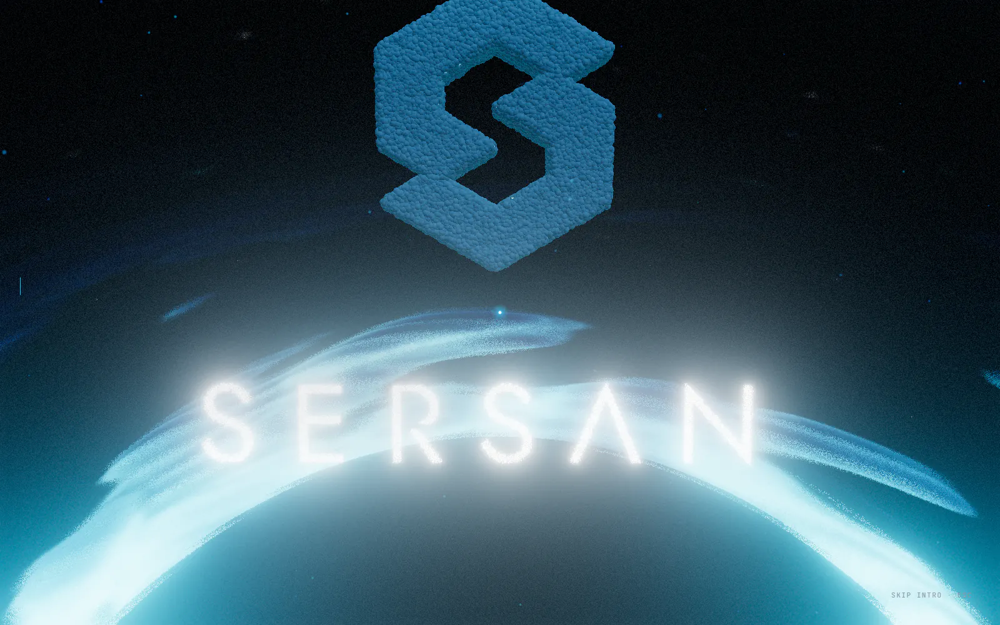
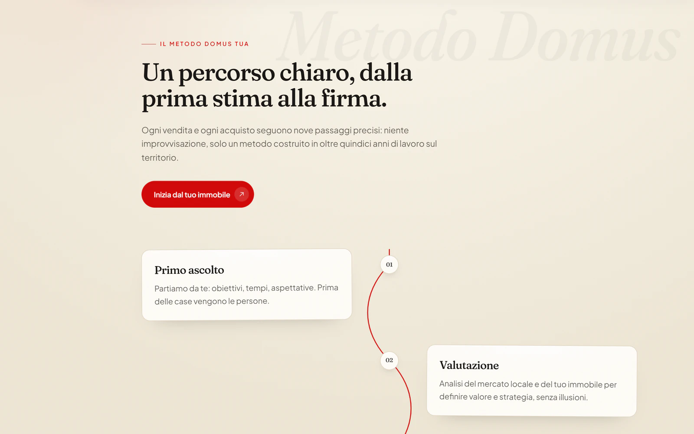
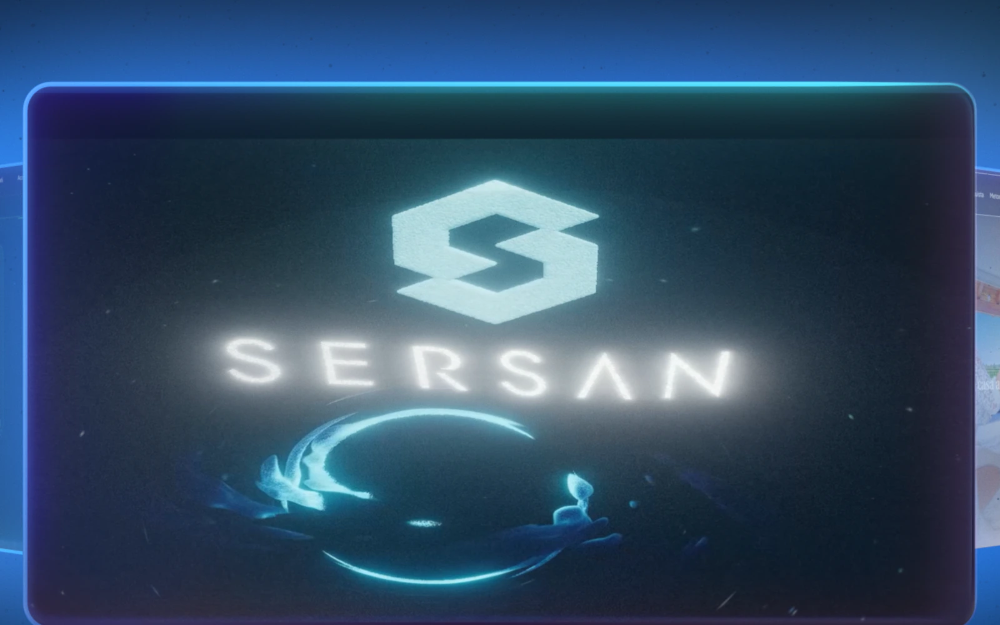
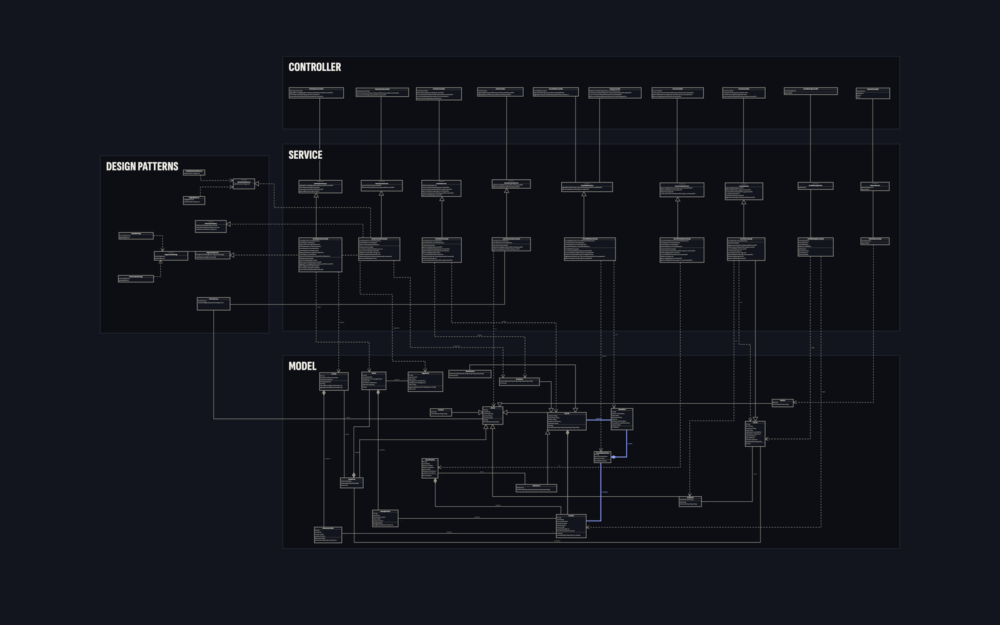
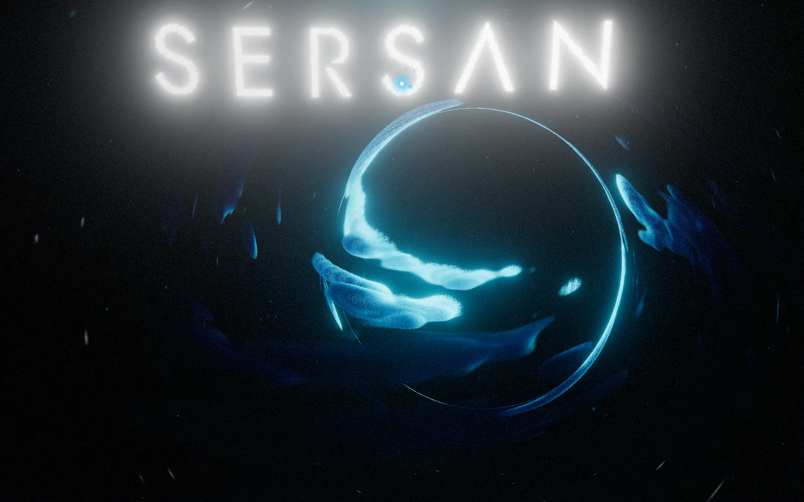

Software & AI Engineer · Creative Lead at SerSan
From database schema to real-time WebGPU rendering and motion design.
— points · — ms GPU
02 / 09
Open the case





Eight layers of the stack, one above the other. The layer in step lifts and its edges light.
Light where the ground is night. Past the straight edge the same points are ink.
— points · — ms GPU
— points · — ms GPU
A bench line of body text that the room keeps clear: no blade, chip or point crosses it, and it reads the same with the stage off.
Write to me— points · — ms GPU
— splats · — ms GPU